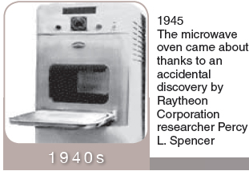
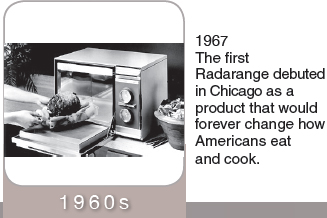

“I probably don‘t have to tell you, but we have become pretty popular. Some people credit our success to the convenience we offer but I think it‘s because we‘re really good looking in stainless steel, and we really know how to heat things up...no matter how frozen! Today more than 80% of U.S. households own microwaves - that‘s over 73 million - in homes alone! That‘s not counting the millions that are in restaurants, hotels, clinics, offices, and many other places. We have changed quite a bit though, with the first microwave, my grandfather, standing almost 6 feet tall and weighing in at 750 pounds. As we have become more compact over the years, so have our parts.”
“The magnetron has gotten much smaller, and at the same time more powerful. That just goes to show you, that size really doesn‘t matter! Now you can get them in different wattages and different power levels too. Originally when you chose the power level (low, medium, high or defrost), the magnetron power didn‘t change, it was just the amount of time that it stayed on. Now the amount of power is actually adjusted according to the selection you make. Magnetrons used to weigh 10 to 15 pounds, and nowadays weigh less than 2 pounds. The magnetron is located on the right hand side of the cavity, and in case you‘re wondering; yes, a lot of microwaves are right-handed. Originally the radio waves would be directed through a channel, up the side and over the top to enter the cavity from the top at the center. Now magnetrons are placed so that the radio waves go directly into the cavity from the side. Unlike many other appliances, there is no door seal on a microwave, because let‘s face it, we‘re not like other appliances. So to keep the radio waves in, we use a type of plastic frame on the inside of the door called a choke, which doesn‘t let the radio waves leave the cavity. Despite all the myths about going blind if you watch the food cook or becoming sterile if you stand in front of us while we are cooking; it is relatively safe to be around a microwave nowadays. However handling a magnetron that has had electricity run through it can be VERY dangerous; it can hold a massive charge, even after the oven has been unplugged! As I said, we‘re relatively safe nowadays, but at times, we can be a little hot-headed!”
“The high voltage transformer does much the same as it always has and is located on the right-hand side of the cavity with all the other power parts. It too, has gotten much smaller over the years, going from a 5 to 10 pound part down to less than a pound. On some microwaves they have added a second transformer as well, called a low voltage transformer. Not me though, I‘m all high-voltage, baby!”
“The capacitor has also become smaller. They were originally almost a foot tall and now they usually aren‘t any taller than 4 to 7 inches. Can anyone guess where the capacitor can be found? That‘s right, It is also found on the right hand side of the cavity with the rest of the power parts. The capacitor resembles a large nine volt battery, or from the ‘good ol‘ days‘ as my grandpa would say, it looks like a “whiskey flask”. Just like a nine volt battery, if you touch both sets of terminals the capacitor will discharge, and holding a charge of up to 2500 volts without being plugged in, it can be very dangerous, just like the magnetron!”
“The diode hasn‘t changed much over the years. There are several styles of diodes available now but they pretty much all do the same thing; allow electricity to flow in one direction. It will always be found with the capacitor as it mounts directly on the terminals of the capacitor changing the current before it goes into the magnetron. Man, when that diode goes out it‘s like being a fish out of water; you can‘t swim without the right current, you know what I mean?”